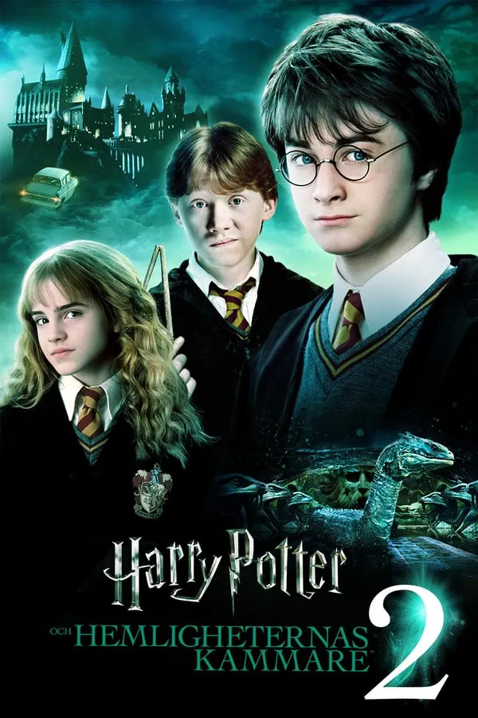

Harry Potter och hemligheternas kammare
Sommarlovet är äntligen över! Harry Potter har längtat tillbaka till sitt andra år på Hogwarts skola för häxkonster och trolldom...
Sommarlovet är äntligen över! Harry Potter har längtat tillbaka till sitt andra år på Hogwarts skola för häxkonster och trolldom...
Ki-taeks familj är en färgstark skara som hankar sig fram genom livet med hjälp av påhittighet och list. Men några pengar har de inte, så när sonen Ki-woo blir erbjuden jobb som privatlärare åt dottern i en rik familj, tvekar han inte en sekund...
Strax före utbrottet av Andra världskriget anmäler sig Alan Turing, en briljant ung matematiker, som frivillig till den brittiska underrättelsetjänsten. Snart leder Turing ett MI6-team bestående av en brokig skara forskare, lingvister, schackexperter och underrättelsetjänstemän med uppgift att knäcka koden till nazisternas påstått olösbara Enigmachiffer...
Bryan ger upp sitt jobb inom CIA för att kunna bo nära sin f.d. fru, Lenore och dotter, Kim i Los Angeles. Han vet att han åsidosatt dem bägge under alla år och aldrig varit en närvarande pappa. Detta vill han råda bot på nu och det svider lite extra att fruns nye make är rik, trevlig och skämmer bort hans dotter rejält.Bryan har dock svårt att koppla bort sitt förflutna och ser faror överallt...